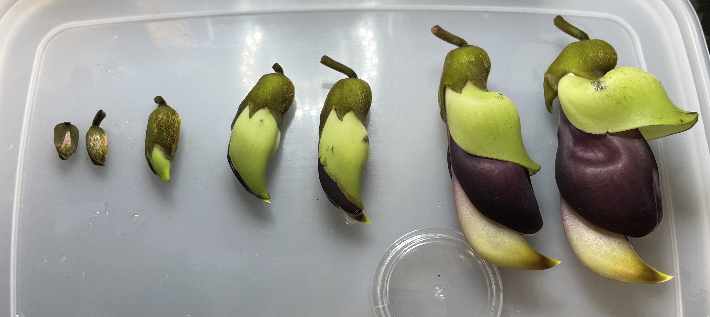
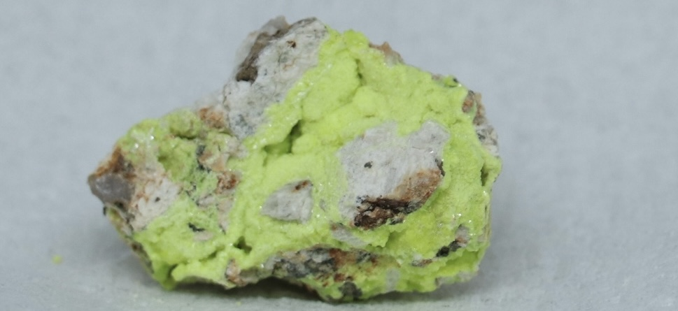

蒐集 / collections
蒐集したものを後悔しています
蒐集物を見る →記録 / records
実験 観察 調査 計算などの記録を公開しています
記録を見る →装置 / instruments
自作装置の設計、設計過程、実験結果公開しています。
装置を見る →写真帖 / Photographic Album
天体、鉱物、自然など、 撮影した写真を収めています。
写真帖を見る →おみやげ / souvenirs
個人で制作したハンドメイド品などを紹介、販売しています
準備中



蒐集したものを後悔しています
蒐集物を見る →実験 観察 調査 計算などの記録を公開しています
記録を見る →自作装置の設計、設計過程、実験結果公開しています。
装置を見る →天体、鉱物、自然など、 撮影した写真を収めています。
写真帖を見る →個人で制作したハンドメイド品などを紹介、販売しています
準備中